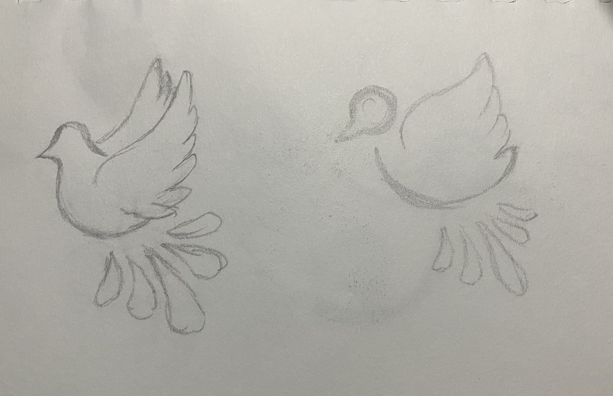

Project information
- Project Title: Sazon Villa Taqueria Logo Redesign
- Category: Graphic Design Composition and layout
- Subject: Design principles and Elements
Concept:
The concept of this project is to redesign the logo for Sazon Villa Taqueria, a taco food truck, to embody the vibrancy, authenticity, and culinary excellence of its offerings. The goal is to create a visually captivating and memorable logo that reflects the warm atmosphere of the taqueria.
Research
- Cultural Significance: Explore the cultural significance of "sazón" (seasoning) and "villa" (town or neighborhood) in Mexican cuisine and heritage. Understand how these concepts can be visually represented in the logo to convey a sense of authenticity and tradition.
- Competitive Analysis:Analyze the branding and visual identities of other successful taquerias and food trucks, both locally and nationally, to identify design trends, common motifs, and opportunities for differentiation.
- Audience Preferences: Consider the preferences and expectations of the target audience, including locals, tourists, and food enthusiasts, regarding taco truck branding and design aesthetics..

Process
- Define Objectives: Clarify the objectives of the redesign, including improving readability, enhancing visual appeal, and maintaining consistency across the publication.
- Sketching and Iteration: Sketch out rough concepts and explore different typographic treatments and graphic elements that embody the essence of Sazon Villa Taqueria. Iterate on the designs to refine composition, balance, and visual impact.
- Digital Rendering: Digitally render selected logo concepts using graphic design software, paying attention to details such as color, texture, and scalability. Explore variations in typography, color palette, and iconography to find the most effective combination.
- Feedback and Revision: Seek feedback from the food truck owner, potential customers, and stakeholders on the initial logo concepts. Consider factors such as readability, cultural authenticity, and brand alignment. Revise and refine the designs based on the feedback received.
- Finalization:Select the final logo design and refine it to perfection, ensuring that it works well across various applications and platforms, from food truck signage to digital marketing materials.